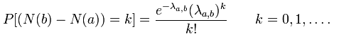

Each sample records whether at least one event occurs in a unit sampling
interval. At rate λ, the probability that a sample is occupied is
1 - exp(-λ). Disjoint intervals are independent. An occupied
sample has the specified amplitude, even if more than one event occurs in its
interval; this output represents occupancy rather than event counts.
If rare and independent events (such as the arrival of photons from a faint star) occur continuously and independently at a constant average rate λ, the number of arrivals in a fixed time interval (a, b], given as N(b) - N(a) is a Poisson distribution given by

Parameters:
Read more about Poisson processes at: